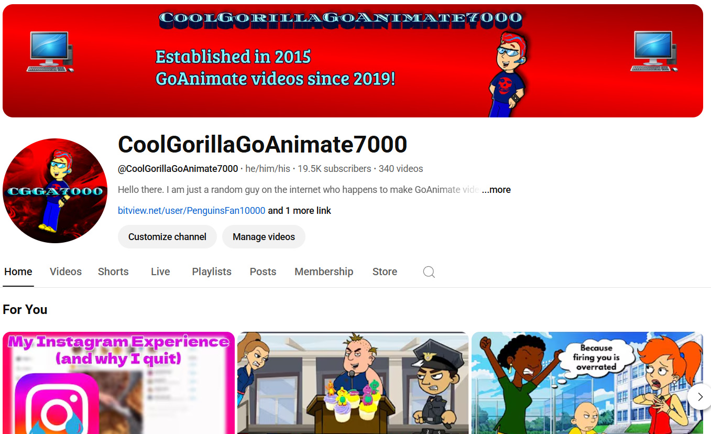
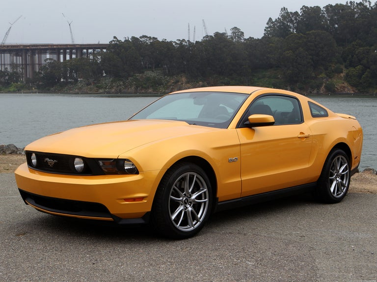
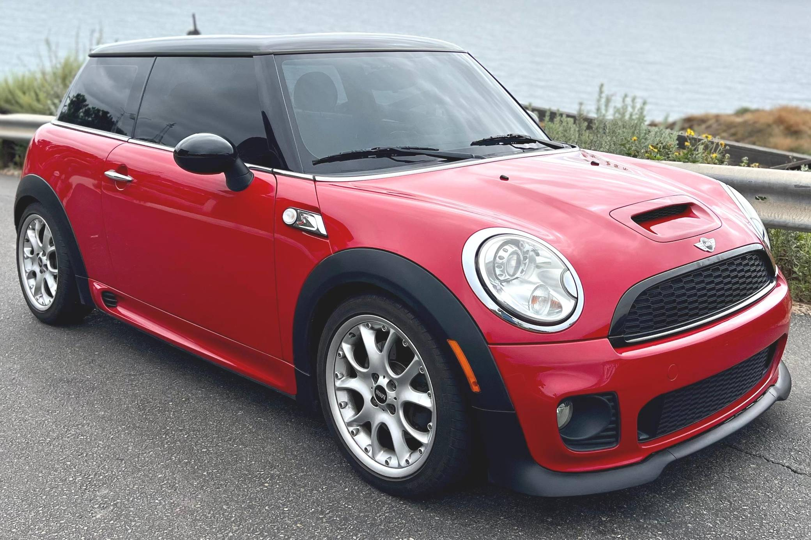
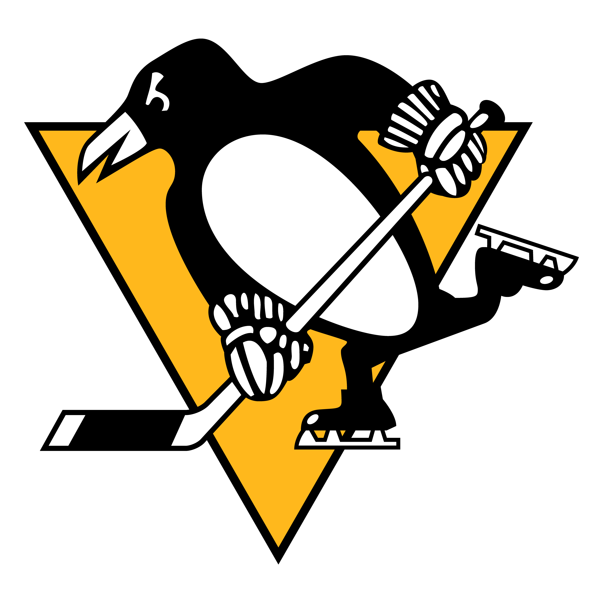
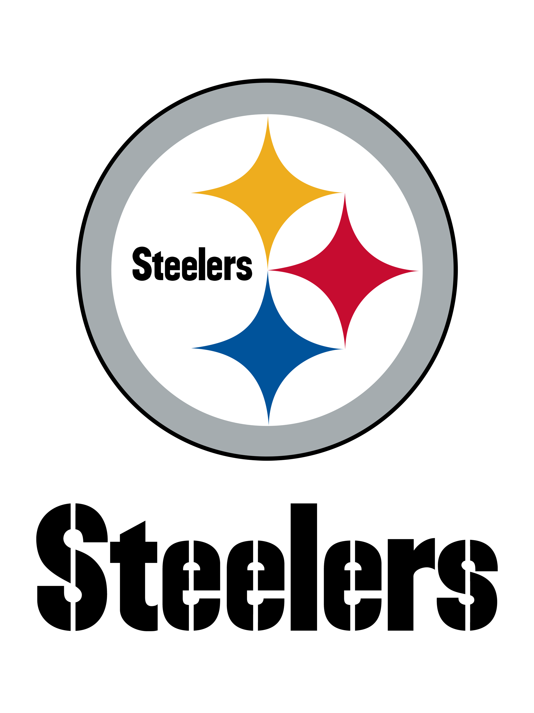

About me:
The following sections on this page discuss who I am and what I'm up to.
YouTube content creation: I currently run a YouTube channel with 19
thousand subscribers named
CoolGorillaGoAnimate7000.
Here, I like to make videos using an outdated Flash program named
GoAnimate. What my content usually contains is characters creating
mischief and getting grounded and punished for their misdeeds, along
with a lazy version of those videos, where they are dumbed down and
badly made on purpose.
Cars: I don’t own a car currently because I simply don’t need one.
Especially not in the college phase of my life. Regardless, I love to
learn about cars and all the different brands that make them. I am a
sucker for performance muscle cars and nimble and quirky cars with
some pep. My favorite cars are the Fifth Generation Ford Mustang and Second Generation Mini Cooper.
Video games: I don’t play video games as religiously as I once did,
considering I tend to switch hobbies every few months. But video games
still play an important role in my life. I love to sit down and play
games my game consoles. I currently own an Xbox 360(without the red ring of death) and Series S, Sega
Genesis, and Nintendo 3DS, Wii, and Switch. My most played video game
of all time is Mario Kart Wii.
Computers: This hobby has waned over the past few years due to
technology advancements that do not appease me like the ChatGPT boom.
But, I still have fun understanding how they work and what goes into
the code of websites, applications, and operating systems. I did a
personal project in high school a few years back where I successfully
repaired a broken Dell Optiplex 780 desktop computer.
Sports: I love to watch and play sports. Specifically, I love to play
hockey. I have been doing it for 7 years now (or 8 seasons). I played
at Hyland Hills in Westminster, Colorado for my youth career and just
graduated from that last year. Now that I am ineligible for youth
hockey, I started playing for my dad’s team and have been doing so for
several months. Besides that, I also love to watch hockey. I follow
the Pittsburgh Penguins. I also exclusively watch football. I follow the Pittsburgh Steelers.









